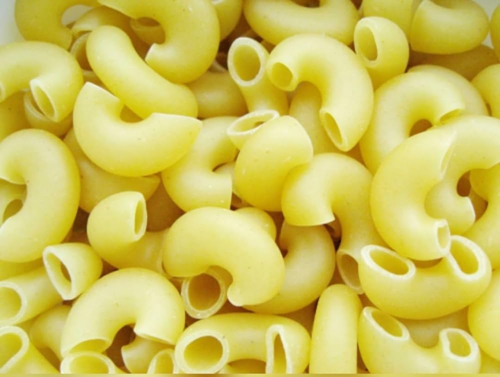

This is a simple and classic recipe for a delicious macaroni and cheese.
Ingredients
- 8 oz macaroni
 2 cups shredded cheddar cheese
2 cups shredded cheddar cheese- 1/4 cup butter
- 1/4 cup all-purpose flour
 2 cups milk
2 cups milk- Salt and pepper to taste
Method
- Cook macaroni according to package instructions. Drain and set aside.
- In a saucepan, melt butter over medium heat.
- Stir in flour until smooth, cooking for about 1 minute.
- Gradually add milk, stirring constantly, until mixture is thickened.
- Stir in shredded cheddar cheese until melted and sauce is smooth.
- Season with salt and pepper to taste.
- Pour cheese sauce over cooked macaroni and stir until well coated.
- Serve hot and enjoy!